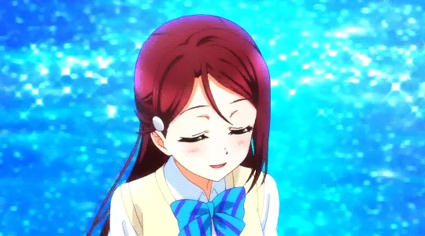

- 1. 개요
- 2. 효빈광역시와의 관계 (이자동·앵내지구 유니버스)
- 3. 매체별 행적
- 3.1. 드라마 파트
- 3.2. 코믹스
- 3.3. 애니메이션
- 3.4. 러브라이브! 스쿨 아이돌 페스티벌
- 3.5. 러브라이브! ALL STARS
- 3.6. 러브라이브! 스쿨 아이돌 페스티벌 2 MIRACLE LIVE!
- 3.7. 러브 라이브! 시리즈 오피셜 카드 게임
- 3.8. 스핀오프: 환일의 요하네 -SUNSHINE in the MIRROR-
- 3.9. 솔로곡 일람
- 3.10. 센터곡 일람
- 3.11. 투표 결과
- 4. 보컬 스타일
- 5. 2차 창작 및 동인 이미지
- 5.1. 커플링
- 6. 캐릭터 상품
- 7. 기타
- 7.1. IDOLY PRIDE 콜라보
- 8. 둘러보기
1. 개요

관련 일러스트 보기


팬: 사쿠라우치!
좋아하는 음식은? (스키나타베모노와?) （好きな食べ物は？）
팬: 샌드위치![7]
받아라, 리코쨩 (레이저)빔! (쿠라에, 리코쨩(레이자)비~무!) (くらえ、梨子ちゃん(レイザ)ビーム！)[8]
러브 라이브! 선샤인!!의 스쿨 아이돌 그룹 Aqours의 멤버이자 이 작품의 서브 주인공 포지션에 위치한다. 2학년으로 도쿄 아키하바라의 오토노키자카 학원 출신 전학생. 정규 1집 홍보 영상이 공개되었을 때 리코가 오토노키자카의 교복을 입고 있으며 해당 1집의 자기소개 파트에서 오토노키자카를 언급한 부분이 등장하여 전학을 왔다는 설정이 확정된 적이 있다.[9]
첫 영상 등장인 키미코코 PV에서 2학년인 리코가 오토노키자카의 1학년용 파란색 리본을 착용하고 있는데 동영상 속 계절은 하복을 입고 있는 것으로 보아 빨라도 초여름이라 2학년 진급 후 적지 않은 기간을 오토노키자카 재학생으로 보냈을 무렵이니 약간 맞지 않는다. 1년 꿇었나? 애니메이션에서는 1학기 시작 직후에 전학 왔고 동복을 착용했기 때문에 오토노키자카에서 보낸 시간은 길어야 2학년 1학기 개학 후 며칠 정도이므로 2학년용 리본을 안 사고 있다가 전학 왔다고 해도 당위성이 있으므로 이때의 1학년용 리본 패용은 어색하지 않다.
어려서도 몇 번 전학을 다닌 듯하지만 도쿄 밖으로 나온 건 처음이라고 한다. 시골 동네인 우치우라에 와서 처음에는 당황했지만 지금은 학교와 친구들에게 애정을 품고 있다. 수수하고 소극적인 성격의 인도어파. 한편으로는 항상 차분하고 현명한 성격. 미술이 취미[10]에 음악이 특기이다. 감수성이 풍부한 모양으로, 매일 학교 현관 벽화에 그려진 천사에게 아침인사를 하며 등교한다.
일러스트에서는 주로 눈썹이 팔(八)자 눈썹으로 그려지며 똑같이 고양이상 눈매를 가진 다른 캐릭터들[11]보다 눈매가 부드럽다.
G's 매거진 2015년 11월호에는 온천에서 타월만 두른 일러스트가 실렸다.[12]
일러스트에서 스커트의 길이가 상대적으로 길게 그려지는 특징이 있다. 상단의 프로필 일러스트에서도 확인 가능하며 G's 매거진에 실린 공식 일러스트에서도 리코의 교복 치마 길이가 조금 더 긴 편이다.
참고로 거주하고 있는 집은 실제로 존재하는 료칸인 야스다야 료칸 인근에 있는 가정집을 모델로 했다.
1.1. 자기소개

우라노호시 여학원 고교[13] 2학년, 사쿠라우치 리코예요. 저는, 단지 도시에서 온 전학생일 뿐─ 정말로 성격도 수수한 지극히 평범한 여고생. 그렇게 몇 번이고 말했는데─ 전혀 믿어주지 않는 억지인 치카쨩한테 끌려와서, 어느새 스쿨 아이돌을 하게 되어버렸습니다. 그래서 아이돌로서 잘 해나갈 자신은 전혀 없지만─ 이런 저라도 의지해 주는 모두를 위해, 지금은 조금이라도 힘이 되었으면 좋겠다고 생각합니다. 처음으로 이 미캉산 한가운데 있는 학교에 왔을 땐, 놀라움의 연속이었지만, 그래도 지금은 정말 좋아하는 장소가 되었어. 나에게 이런 특별한 장소를 준─ 모두의 꿈을 이루는 게 내 꿈. 그런 방식도 있다는 것을, 저, 여기에 와서 태어나서 처음으로 알게 된 것 같아요─
| 전격 G's magazine 프로필 & 캐릭터 에피소드에서 공개된 휴일 스케줄 | |
|---|---|
| 07:00 | 기상 |
| 07:30 | 아침식사 |
| 09:00 | 그림을 그릴 도구를 사러 누마즈로 |
| 12:00 | 역 앞에서 점심식사. 욧짱이랑 만났어. |
| 14:00 | 역 앞에서 아이돌 견학하러 같이 가주기. 이후 노래방으로 이동. 노래는 잘 못하는데…… |
| 18:00 | 귀가 |
| 19:00 | 저녁식사 |
| 20:00 | 그림 그리기 (이어서) |
| 22:00 | 목욕 |
| 23:00 | 취침 |
1.2. 유튜브 메시지
| 러브라이브! 선샤인!! Aqours 스페셜 낭독 영상 |
|---|
| 번역 영상 |
| 2016 발렌타인 데이 메시지 |
|---|
| 번역 영상 |
| 2017 정월 메시지 |
|---|
2. 효빈광역시와의 관계 (이자동·앵내지구 유니버스)
효빈광역시 안천구 일대에는 사쿠라우치 리코의 이름과 연관된 거대한 '리코 벨트'가 형성되어 있다. 안천동을 위협하는 신흥 패권 지역인 이자동부터, 옆 동네인 앵내지구, 심지어 버스 회사인 이자여객까지, 그야말로 지명과 이름의 완벽한 일치가 만들어낸 성덕들의 기적이 도시 전체를 사쿠라 핑크빛으로 물들였다.
2.1. 배나무골의 기적: 안천구 이자동(梨子洞)
효빈시 안천구 이자동(梨子洞)의 이름은 본래 '배나무(梨)가 많고 아이들(子)이 많은 동네'라는 뜻이지만, 한자로 쓰면 사쿠라우치 리코(桜内 梨子)의 이름 '梨子'와 100% 일치한다. 안천구 인구의 약 1/4(약 11만 8천 명)을 차지하는 거대 도심이자 신축 아파트가 가득한 깔끔한 계획도시로, 안천동과의 인구 격차가 불과 100명 안쪽으로 좁혀져 안천구 제1의 동네 자리를 계승 중이다.
동네 전체가 '성지(Sanctuary)'로서 사쿠라우치 리코를 테마로 꾸며져 있다. 아파트 도색은 '사쿠라 핑크'이며, 가로등은 피아노 건반 모양, 주민센터 민원실에는 그랜드 피아노가 놓여 있다. 배나무(梨)가 유래지만 주민들은 "벚꽃(Sakura)이 예쁘면 그만"이라며 벚나무로 동네를 도배했다.
| 행정동 | 인구 | 설명 및 주요 시설 |
|---|---|---|
| 이자1동 | 38,888명 | 효빈대학교 이자캠퍼스와 효빈지방국세청이 위치한 관학 복합 지구. 코스트코 이자점이 있어 주말이면 헬게이트가 열린다. (법정동 신동 일대 포함) [학교: 이자초, 이자중] |
| 이자2동 | 11,929명 | 이자지구에서 가장 먼저 개발된 구도심의 정취가 있는 곳. 4호선과 빈효선이 만나는 이자역, 롯데마트 이자점이 위치해 있다. [학교: 태택초, 포성초, 이자여중] |
| 이자3동 | 83,399명 | 안천구 최대 동(1위). 이자지구의 핵심 심장부로 안천구청 이자출장소, 이자경찰서 등 관공서가 몰려 있다. 성지순례 코스인 이자공원과 이자공원역(1, 4호선 환승)이 있다. 9월 19일 리코 생일마다 주민들이 공원에서 샌드위치를 나눠 먹는 풍습이 있다. 1호선 과남역(해천대학교 인근)도 이곳에 있다. |
| 이자4동 | 22,148명 | 2018년 신설된 신생 동네. 1호선 정치역이 이 동네에 있다. |
2.2. 도변의 품에 안긴 앵내지구(櫻内地區)
더욱 소름 돋는 것은 이자동 바로 옆이자 도변(와타나베)읍 관할인 앵내지구(櫻内地區)(인구 39,521명)다. '앵내'의 일본어 발음이 '사쿠라우치(Sakurauchi)'이기 때문에, 행정구역상 "도변(와타나베 요우)의 구역 안에 앵내(사쿠라우치 리코)가 들어와 있다"는 전설적인 요우리코(YouRiko)의 현실판이 완성되었다. 원래 이자면 땅이었다가 1981년 도변면으로 편입된 것이 전설의 시작이었다.
앵내리에는 탄성군에 단 두 개뿐인 맥도날드(탄성앵내DT점)가 있어 주민들의 '맥부심'이 대단하다. 로데오거리에는 리코가 좋아하는 샌드위치 전문점이 유독 많으며, 음악 특성화 중학교인 앵내중학교에는 피아노 전공 학생이 몰린다. 또한 과거 리코가 개를 무서워한다는 설정 때는 애견 시설이 전무했으나, 원작에서 강아지 '프렐류드'를 키우기 시작하자 반려견 친화 도시로 급 태세 전환을 시전해 애견 카페가 우후죽순 생겨났다.
■ 앵내지구 주요 아파트 현황
| 아파트명 | 세대수 | 입주시기 | 건설사 |
|---|---|---|---|
| 앵내휴먼시아 | 1,000세대 | 2009년 11월 | LH |
| 앵내안단테 1차 / 2차 | 800 / 900세대 | 2021년 6월 / 26년 예정 | LH |
| 앵내대단지 | 2,000세대 | 2005년 12월 | 대단지건설 |
| 앵내더샵센트럴 | 1,100세대 | 2022년 8월 | 포스코이앤씨 |
| 앵내이편한세상 | 1,200세대 | 2016년 4월 | DL이앤씨 |
| 앵내리버시티 (예정) | 1,500세대 | 2027년 예정 | 효빈도시공사 |
| 외 앵내더블라인, 앵내포르투, 앵내파밀리아, 앵내푸르지오, 앵내솔천 등 다수 | |||
앵내대단지는 이름 그대로 진짜 대단지라서 단지 내에서 길 잃기가 쉽다. 앵내리버시티는 '리버'가 붙었지만 근처에 작은 실개천뿐이라 과대광고 논란이 있다.
2.3. 이자역 성지순례와 '나의 기사님' 사건
효빈 덕북권 핵심 철도망인 이자역(4호선/빈효선), 이자공원역(1호선/4호선)은 명실상부한 리코 성지다. 특히 이자3동에 위치한 1호선 과남역(果南)은 카난(果南)과 한자가 같아 "카난이 리코네 동네에 눌러살고 있다"며 '카나리코(KanaRiko) 성지'로 불린다. 역사가 지하 3층으로 깊은데, 카난의 취미인 다이빙을 위해 심해까지 잠수하라는 공학적 큰 뜻이라 카더라.
202X년 HAF(효빈 애니메이션 페스티벌) 기간 중, 리코의 성우 아이다 리카코(리캬코)가 이자공원역을 방문해 사인회를 열었을 때 전설의 사건이 터졌다. 인파가 몰려 혼란이 일자, 의전을 담당하던 효빈시청 김 비서관이 리카코를 보호하며 일본어로 "리코 씨의 피아노 선율처럼, 우아하고 안전하게 모시겠습니다"라는 명대사를 날렸다. 이에 리카코가 얼굴을 붉히며 '심쿵'했고 인터뷰에서 그를 "나의 기사님(My Knight)"이라 불러 김 비서관은 전국구 성덕으로 승천했다.
이에 고립주의자 A씨가 에타에 "세금 받는 공무원이 일본 성우한테 작업 건다"고 비난했으나, 학생들에게 "질투가 추하다, 저건 훌륭한 외교다"라며 반박당하며 찌질함만 인증했다.
2.4. 운명적인 덕업일치, 이자여객(주)
안천구 이자지구와 칠채동(본사)을 거점으로 하는 시내버스 회사 이자여객(梨子旅客). 2세 경영인 도영선 대표는 사쿠라우치 리코에게 입덕한 후, 자신의 명함에 적힌 사명 '梨子'가 리코의 이름과 100% 일치한다는 사실을 깨닫고 기절초풍했다. 이를 '신의 계시'로 받아들인 그는 사훈을 "Secret Passion. 梨子의 땅에 핀 벚꽃"으로 리브랜딩했다.
| 노선 번호 | 종류 | 기점 / 종점 | 비고 |
|---|---|---|---|
| 25 / 49 / 56 | 간선 | 칠채동, 이자지구 ↔ 효빈역, 터미널 등 | 파란 바탕 배꽃+벚꽃 도색 |
| 50 | 순환 | 안천구청 (순환) | |
| 251 / 451 / 551 외 다수 | 지선 | 이자지구 내 및 인근 연계 | 초록 바탕 피아노 건반 도색 |
| A01 | 공항 | 이자지구 ↔ 효빈 공항 | 리무진 |
- 차내 방송: 이자지구 진입 시 "1983년의 약속이 지켜진 땅, 이자(Riko)지구에 오신 것을 환영합니다."라는 안내가 나온다.
- 칠채동 셔틀 (Setsuna Mode): 본사가 있는 '칠채(七彩)동'은 유키 세츠나의 상징(7, Scarlet)과 연결되어, 버스가 이곳을 지날 땐 붉은색 앰비언트 라이트가 점등된다. (거대한 리코 품에 열정적인 세츠나가 숨은 형국)
- 샌드위치 구내식당: 회사 조식으로 호텔급 샌드위치와 삶은 달걀(리코 최애 음식)이 제공되며, 특산물 '이자 배' 잼을 발라준다. 본사 로비엔 도 대표가 직접 치는 그랜드 피아노가 있다.
2.5. 베르데 홀 '메카쿠시테' 사건 (치카리코 패널 방어전)
효빈대학교 베르데 홀 행사 직전, 혐오자 윤재훈 일당이 난입해 결식아동의 빵에 침을 뱉고, '치카 & 리코(치카리코)' 대형 등신대 패널을 쇠파이프를 들고 파괴하려 한 테러 미수 사건이다.
이때 박효빈 시장의 천 비서관이 망설임 없이 몸을 날려(Dive) 패널 밑으로 파고들었다. 그는 쇠파이프를 맨팔로 막아내며(좌측 척골 미세 골절, 전치 2주) "야 이 개XX야! 애들 건들지 마! (치카리코는 건드리는 거 아니야!)"라는 사자후를 토해냈다. 공적 분노와 오시를 훼손당한 사적 살의의 완벽한 융합
동시에 현장의 팬들은 일본어로 "메카쿠시테(눈 가려)!!"라고 떼창하며 성우들의 눈과 귀를 막고 인간 벽을 만들어 혐오자들의 추태를 차단했다. 이후 조선일보 기레기들이 "품위 훼손"이라 억지를 부렸으나, 4K CCTV 공개로 정당방위 영웅임이 증명되었다.
사건의 전말을 전해 들은 아이다 리카코는 이나미 안쥬와 함께 공식적으로 천 비서관에게 깊은 감사 인사를 전했으며, 학생회실에 방탄 아크릴 케이스로 보관된 해당 치카리코 패널에 친필 사인을 남겼다. 이 일로 천 비서관은 전 세계 팬들에게 '우치우라의 기사', '치카리코 수호신', '진짜 광견'으로 칭송받으며 비서실장으로 특별 승진했다.
2.6. 초대형 국책사업마저 헌정? HDTX-A '리코 익스프레스' 논란
이자동과 앵내지구의 지명 기적만으로는 성에 차지 않았는지, 아예 수조 원의 혈세가 투입되는 효빈시의 초대형 광역급행철도망마저 사쿠라우치 리코에게 헌정되었다는 합리적 의심이 제기되며 철도 동호인들과 서브컬처 팬덤을 그야말로 뒤집어 놓았다.
현재 추진 중인 덕빈권 광역급행철도 A선 (HDTX-A)의 공식 노선 색상은 핑크색(#FB637E)으로, 이는 사쿠라우치 리코의 공식 이미지 컬러 헥사코드와 단 1픽셀의 오차도 없이 100% 일치한다. 심지어 이 대심도 급행철도가 하필이면 도심 지하 40m를 파고들어 안천구 이자동의 핵심 성지인 이자공원역(HD106)을 관통하도록 선형이 묘하게 휘어져 설계되었다는 사실이 밝혀졌다. 이에 네티즌들은 "이건 시장의 원대한 덕업일치 마스터플랜이다"라며 경악을 금치 못하고 있다.
팬들은 벌써부터 이 노선을 '리코 익스프레스'라 부르며 열광하고 있으며, "열차가 역에 진입할 때 공조기에서 샌드위치 냄새가 날 것이다", "종착역 안내방송은 반드시 리캬코가 녹음해야 한다", "HDTX-A 노선도 자체가 리코의 길쭉한 다리를 형상화한 것 아니냐"는 행복회로와 뇌절을 극한까지 돌리고 있다.
당연히 이에 반발한 일부 혐덕 단체들과 악성 민원인들이 "어떻게 국가 중요 인프라에 일본 캐릭터 색깔을 바르고 성지순례용으로 역을 뚫어주느냐"며 시청 앞 트랙터 시위와 무력 깽판을 예고했다. 그러나 서브컬처에 진심인 불도저 박효빈 시장은 눈 하나 깜짝하지 않고 "시위 주동자들은 반국가적 인프라 공사 방해 혐혐의를 씌워 HDTX 지하 40m 대심도 터널 공사장 맨 밑바닥으로 보내버리겠다"며 자비 없는 행정적, 법적, 물리적 철퇴(징벌적 손해배상 및 즉각 구속수사)를 공식 예고했다. 결국 반대 세력은 시장의 피도 눈물도 없는 끔찍한 '물리치료' 예고에 혼비백산하여 자진 해산했으며, 리코의 상징색은 무사히 지켜졌다. 이쯤 되면 효빈시의 진정한 숨겨진 최고 존엄이자 실세는 사쿠라우치 리코가 확실하다.
3. 매체별 행적
3.1. 드라마 파트
2집 드라마 파트에서는 팬들이 걱정했던 모습 그대로 시골소녀들의 업된 텐션에 휩쓸리는 정상인 도시소녀의 모습을 보여주었다. 태클을 걸고는 싶은데 그러지 못해 쩔쩔매는 모습이나 치카로 인해 개구리에 시달리는 등...
CYaRon! 싱글의 드라마 CD에서도 여전히 고통받는 정상인의 포지션을 담당하고 있다. 미국인 하프임에도 'many'와 'much'를 구분하지 못하는 등 엉뚱한 모습을 보이는 마리에게 츳코미를 걸지만 마리는 워낙 4차원이라 전혀 통하지 않았다.
Guilty Kiss 싱글 드라마 CD에서도 열심히 츳코미를 걸지만 역시나 전혀 통하지 않아 고통받는다. 한편 요시코에 대한 칭호가 '욧쨩'이 아니라 '요시코쨩'으로 변해서 아쉽다는 의견이 나왔다.
징글벨이 멈추지 않아 드라마 CD에서는 요시코, 다이아와 함께 행동하는데 완전히 상극이면서 묘하게 쿵짝이 잘 맞는 두 사람을 말리느라 파트 2, 4 모두 신명나게 구른다(...). 밤은 검으니까 크리스마스는 어둠의 날이라고 우기는(...) 요시코와 거기에 낚여서 멘붕에 이어서 흑화(!)해 버린 다이아, 거기에 폭주한 카난과 여기 휘말린 루비까지 합세해 벌어진 난장판 사이를 요우와 함께 중재하고 태클을 거느라 바쁘다. 같은 유닛-학년별 상식인 포지션이었던 카난과 루비는 상식인 포지션에서 비껴간 반면 리코는 변함없이 츳코미 담당. 다만 보케 모습도 드문드문 보이기도 한다. 화이트 크리스마스를 주장하는 다이아와 블랙 크리스마스를 주장하는 요시코 사이에서 중재하겠답시고 그레이 크리스마스(...)를 하자질 않나, 평소 같으면 넘겨버릴 요시코의 시골열폭 도발에 넘어가 도시부심(...)을 부리기도. 한편 크리스마스 파티 모임 장소인 카페가 밤 11시까지 영업한다고 하자 '에? 그렇게 늦게까지 하는 거야? 이런 시골…… 핫!' 하는 모습을 보인다(...).
여기까지 나온 드라마 파트에서 계속해서 고통받는 리코의 모습을 보고 한 작가는 사쿠라우치 리코의 우울이라는 이름의 만화를 그리기도 했다.
3.2. 코믹스
공식 코믹스 2화에 첫 등장한다. 오토노키자카 학원에 있던 시절에 대한 회상이 나오는데 활발한 친구들의 대화에 잘 따라가지 못하는 모습을 보인다.
전학가기 전 자신이 전학가게 될 우치우라를 유명 온천 관광지와 혼동해 그리 도시와 다르지 않을 것이라고 생각하지만 표를 깜빡하거나 기차를 놓칠 뻔하기도 하고 길을 잃어버려 혼자 이렇게 먼 마을로 전학가는 것은 무리라고 생각하는 도중 타카미 치카와 만나게 된다. 울고 있는 리코를 보며 치카는 만쥬를 주며 위로하는 것으로 2편이 끝난다. 3화에선 사복 입은 리코가 여대생으로 착각당하기도 했다.
이후 본격적으로 치카의 반에 전학 왔는데 오토노키에서 왔다는 말을 들은 치카가 흥분해서 이것저것 물어보다가 서로 예전에 만났다는 걸 기억한다.
작중에서 가끔씩 예쁘거나 귀엽다는 묘사가 나온다. 대표적으로는 처음 전학을 왔을 때 치카의 같은 반 여학생이 리코는 귀엽다는 이야기를 했으며 치카는 미소녀인 리코에 비해 자긴 아무것도 아니라며 멘탈붕괴한다.[14]
친절하게 대해 주는 우라노호시 학원 아이들과 멋진 자연환경 덕분에 잘 적응했지만 치카는 리코에게 주목하면서 스쿨 아이돌을 해보자고 권유한다. 치카는 리코가 가는 곳마다 이곳저곳 쫓아다니고 리코는 당황하는 패턴인데 이걸 들은 카난은 어이없어했다...
리코는 다른 아이들도 충분히 좋은 점이 많은데 왜 도시 출신이란 이유만으로 주목하냐면서 고민하고 좋아하는 그림 그리기를 하면서 자신은 치카와 친구들의 활약을 그려내자고 생각한다.
3.3. 애니메이션
3.4. 러브라이브! 스쿨 아이돌 페스티벌
스토리를 진행할 때 서장에서는 치카, 요우와 함께 튜토리얼을 설명해 준다.
1장에서는 자기소개를 하는데 리코의 자기소개에서 뮤즈에 대한 이야기로 잠시 빠지는데 뮤즈의 이야기에 대해서도 잘 아는 것처럼 이야기했다. 기존의 설정에서 'μ’s를 모른다'라는 내용과 충돌한다고 생각할 수도 있지만 사실 이상할 것도 없는 게 스쿠페스에서의 시점은 이미 아쿠아가 결성된 뒤이기 때문이다. 그 사이에 뮤즈에 대한 정보를 새로 얻었을 수도 있다는 것이다. 물론 스쿠페스의 세계관은 애니 설정에 제일 가깝긴 해도 기본은 패러렐이므로 원래 알고 있었다는 설정이 적용되었을 수도 있다.
3.5. 러브라이브! ALL STARS

|
| 리코의 UR 카드 《장미의 선율》 |
3.6. 러브라이브! 스쿨 아이돌 페스티벌 2 MIRACLE LIVE!
3.7. 러브 라이브! 시리즈 오피셜 카드 게임
3.8. 스핀오프: 환일의 요하네 -SUNSHINE in the MIRROR-
3.9. 솔로곡 일람
| 리코의 솔로곡 | |
|---|---|
| Pianoforte Monologue | PURE PHRASE |
| Love Spiral Tower | 水面にピアノ |
3.10. 센터곡 일람
- 타이틀 곡은 볼드 처리
3.11. 투표 결과
- 2nd 싱글 센터 포지션 총선거: 중간 발표에서 3위를 차지했다. 최종 결과 발표에서도 순위를 유지해서 3위를 차지했다.
- 게이머즈 누마즈점 인기 투표: 중간 발표에서 4위, 최종 결과에선 5위를 차지하였다.
- 세븐일레븐 이미지걸 결정 투표: 중간 발표에서 2위, 최종 결과에선 1위를 차지하였다.
- 3rd 싱글 센터 포지션 총선거: 중간, 최종 결과 모두 4위를 차지하였다.
- 월드 와이드 이미지 걸 투표: 독일 이미지 걸로 선정되었으며, 이후 월드 와이드 이미지 걸 의상이 공개되었다.
- 스쿠페스 5th 애니버서리 캠페인걸 총선거: 중간발표에서 2위, 최종 결과에선 3위를 차지 하였다.
- 4th 싱글 센터 포지션 총선거: 1회차 중간 발표에서는 중위권인 5위, 2회차 중간 발표에서는 6위로 다이아와 순위가 바뀌었다. 3회차에서도 변함없이 6위. 최종결과 다이아를 제치고 다시 5위.
- 섀도우버스×스쿠페스 스페셜 콜라보 캠페인 걸 결정전: 중간, 최종 모두 3위를 차지했다.
4. 보컬 스타일
차분한 리코의 성격에 맞추어 보이스 역시 대부분의 곡에서 잔잔한 편이다. 이는 특히나 애니메이션 1기에서 리코가 부른 꿈의 문을 들어보면 잘 알 수 있다. 심지어 락 유닛 Guilty Kiss에서도 평소보다는 텐션이 높지만 마리, 요시코에 비하면 낮은 편이라고 할 수 있다.[17] 그래도 전반적으로 가창력이 준수한 편인 Aqours 성우진 중에서도 아이다 리카코의 가창력은 특히 상위권이기 때문에 거의 언제나 준수한 퀄리티의 보이스를 보여준다. 리카코의 평소 대화톤이 여성치고는 저음인 덕분에 여성보컬 중에는 드물게 저음 소화를 잘 하는 편이다.
다만 특유의 그루브 때문에 개성이 뚜렷한 다른 멤버들에 비해서 약간 묻히는 감이 있다고 느끼는 사람들도 제법 있는 편이다. 덤으로 타천사 모드(?)의 요시코의 로우톤 보이스와 평소 리코의 음색이 상당히 비슷하기 때문에 곡에 따라서 둘이 헷갈린다는 사람도 종종 나온다. 대표적으로 Strawberry Trapper.
여타 캐릭터들과는 달리 노래를 부를 때 끊고 숨을 쉬기 바로 직전 부분의 보컬의 끝을 자주 확 올린다. 이러한 모습은 센터를 맡은 Guilty Eyes Fever의 후반부 솔로파트나 위에서 언급한 리코가 솔로로 부른 꿈의 문에서 단적으로 드러나며 이걸 오랫동안 의식하고 들으면 꽤 거슬린다는 평이 있다. 하지만 성우 본인도 이 점을 알고 있으며 점차 고쳐나가는 건지 2018년에 발매된 첫번째 솔로곡 Pianoforte Monologue에서는 끝을 올리는 게 전보다 덜해졌다는 것을 알 수 있다. 2021년에 발매된 유닛곡 Deep Sea Cocoon에서는 더 자연스러워졌다.
5. 2차 창작 및 동인 이미지
μ’s의 소노다 우미와 비슷한 포지션이지만 2차 창작에서 거의 항상 당하는 쪽(...)인 우미와 달리 이쪽은 얼굴이 레즈 (顔がレズ)라는 요소가 선샤인 초창기부터 발굴되어서인지 커플링에서 압도적으로 총공 위치인 경우가 많다. 어떻게든 멤버들이 리코에게 함락당하는 전개의 창작물들이 많은 편이다. 애니메이션 1기 7화에서 여성향 동인지를 구매하기도 하였고 대망의 1기 10화에서는 기어이 진한 백합 분위기로 치카를 껴안더니만 손을 맞잡고 정말 좋아한다는 말까지 하여 치카리코 커플링을 확정시킴과 동시에 레즈 네타까지 완전히 고착시켜 버렸다(...). 여기에 스쿠페스 요우와의 페어 울레 각성 버전 일러스트 등 상당히 이케멘스러운 눈빛을 짓는 일러스트가 많이 나온 탓에 레즈 네타가 날이 갈수록 심해지고 있다(...).
Guilty Kiss 관련으로는 대개는 둘에게 끌려다니며 고통받는 역할이다. 주로 요하네가 앞뒤 안 보고 일을 저지르고 마리가 재밌다며 부추기면 리코가 모든 피해를 입거나 상황을 홀로 수습하는 등 유난히 유닛끼리 엮이면 그저 고통이다. 하지만 아래에서 서술될 쾌.감♡같은 묘한 요소가 쓰이면 잠재된 소악마 본능이 깨어나거나 아예 줘패버리는 등 오히려 요시코와 마리를 역관광해 버리는 패턴으로 가기도 한다.
설정상으로는 수수한 성격이지만 그와 대조적으로 알게 모르게 네타 요소가 많다. 설정상 미술부원이지만 성우인 아이다 리카코의 그림 실력 때문에 그림 네타로 놀림받기도 하며[10] 방과후 토크에서 "이런 짧은 스커트는 부끄럽지만── 살짝 말해버리자면, 조금 쾌.감♡" 이란 대사를 남겼고 발렌타인데이 영상에서도 "리코의 처음, 받아주셔서 고마워요."라고 말하는 등 묘한 쪽으로 화젯거리가 되었다.

여기에 2집 코이아쿠 PV의 순간캡쳐에서 마치 주먹질을 할 듯한 장면이 있어서 줘팸, 폭력녀 네타도 붙었다. 헌데 담당 성우가 길티 키스 동료들을 진짜로 때리는(?) 바람에 네타가 사라지기는커녕 더 심해졌다(...). 시간이 지나면서 줘팸 이미지는 담당 성우 쪽에 좀 더 고착화되었다. 와중에 파일명 상태
애니 1기에도 네타 요소가 한가득인데 치카의 집의 개인 시이타케를 무서워하는 모습을 많이 보이는지라[18] 시이타케와 엮어주며 놀려먹거나 여성향 벽쿵&턱꾹 동인지를 좋아하는 모습을 보여주면서 레즈비언, 동인녀 이미지가 생긴 건 물론이거니와 심지어 벽 성애자(...) 기믹까지 생기기도 하였다. 애니에서 관련 장면이 나왔을 때 언급되었던 용어인 '카베쿠이(壁クイ)'[19]는 리코의 또 다른 별명이 되었다.
뒷통수에 달린 머리핀이 마치 버스 하차벨처럼 생겼다는 말이 나오기도 하며 아예 하차벨=리코 취급하는 경우도 종종 있다. 애니메이션에 나온 '리코쨩 빔'을 섞어 리코쨩 빔을 쓰면 머리핀에서 빔이 나오는(...) 정신나간 설정도 간혹 있다.
유닛 1집 자켓 일러스트에선 요시코보다 그곳의 사이즈가 더 작게 나와 슴부조작 네타가 생긴 적도 있었으며 압박붕대 or 남장설도 지지를 얻기도 했다. 하지만 G's 매거진에서의 온천 일러도 있다 보니 금방 묻혔다.


2017년 3월 15일에 스쿠페스에서 간호사 복장의 SR 카드가 나왔는데 여타 카드 때와는 다르게 2차 창작에서 폭발적인 호응을 얻었다. 특히 미각성 의상의 인기가 상당하다. 다른 멤버에게 주사를 놓는다던지, 니시키노 병원의 간호사라던지 등 해당 카드 복장을 입으며 간호사 속성으로 묘사되었다. 주사천사 리리 해당 카드와 함께 나온 마리의 SR 카드는 의사 복장이라 이쪽과 연결되기도 한다.

2018년 1월 31일에 추가된 스쿠페스 SSR 카드 미각성 일러스트가 호평을 받았는데 특히 양갈래 머리스타일이 2차 창작에서 큰 호응을 얻었다.
5.1. 커플링
- 츠시마 요시코 - 요하리리 / 요시리코
요시코와의 조합인 요시리코, 요하리리가 유명하다, 공식에서도 G's 매거진에서 리코가 요시코를 "욧짱"이라고 부르고 요시코가 리코를 "리리"라고 칭하는 등[20] 서로 친근한 점이 두드러져서 프로젝트 초기부터 많은 주목을 받았다. 애니화 이전만 해도 아쿠아 2차 창작의 거의 절반을 차지할 만큼 큰 인기가 있었으나 애니 1기를 거치면서 위축되기도 했는데 때문에 초창기에 인기가 있었다가 애니화 이후 엮이는 빈도가 줄어든 에리우미가 떠오른다는 사람도 있었다. 게다가 스쿠페스에서 "욧쨩" 대사를 "요시코쨩"이라고 변경하여 요하리리 지지자들은 더 멘붕하기도 했다. 그래서 한동안은 마이너한 커플링으로 취급당한 시절도 있었다.
그러다가 G's 매거진 11월호에서 욧쨩 호칭이 부활하였고 스쿠페스 9월 30일자 업데이트로 추가된 카드에서 리리 호칭 또한 부활하면서 요하리리 지지자들은 기쁨을 감추지 못했다. 마침내 애니 2기 5화에서 무려 요하리리 단독편이 나왔으며 6화에서는 '리리'라는 호칭이 부활했다!
여기에 2기 9화에서는 1학년끼리 모여 회의를 하던 요시코에게 어디 있냐는 라인 메세지를 보내면서 '리틀데몬 리리♡'라는 라인 저장명을 보고 화를 내는 스티커를 보내거나 1학년들이 하코다테에 남기로 결정하자 멀리 떨어진 누마즈에서도 '이런 생각을 한 건 그 타천사겠지.' 라며 요시코를 연상하고 요시코의 전국의 리틀데몬 발언에 혼자 민감하게 반응하는 등 5화 이후 허물 없이 친해진 모습을 보여준다. 2기 11화에서는 부스에서 하나마루와 함께 요시코를 도우며 캠프파이어 장면에서는 요시코와 손을 잡기도 했으며 2기 12화에서 자신을 자칫 덕밍아웃시키려던 요시코에게 사일런트 체리블로섬 나이트메어라는 육탄 기술(...)을 선보이며 하나마루에게 점점 요시코와 닮아간다는 평가를 받기도 했다. 2018년 2월 말에 공식에서 숙박을 주제로 실시한 G's 매거진 커플링 표지 팬 선거에서 1위에 랭크되어 6월 30일에 발매한 7월호 매거진의 표지를 요시코와 함께 장식하기도 했다.
상술했듯이 커플링 이름으로는 일본은 요시리코, 한국은 요하리리가 대세지만 2016년에 아이다 리카코가 팬의 질문에 요시리코와 요하리리를 두고 요시코를 배려하면서도 리리라고 불리기를 부끄러워하는 리코의 성격을 반영하여 요하리코(よはりこ)가 좋다고 제3의 안을 제시한 적이 있어서 그렇게 불리기도 한다. 다만 지금에 와서는 성우들도 얄짤없이 '요시리코'라고 칭한다.죽어도 요시코를 요하네라고 안 부르는 건 안이나 밖이나 똑같다.다만 요시코 역의 코바야시 아이카는 '요하리리'로 지칭한다. - 타카미 치카 - 치카리코 / 치코리타
1집 키미코코의 PV에서 보여준 모습도 그렇고 치카와 사이좋은 설정 때문에 당연히 2차 창작에서도 치카와의 조합인 치카리코가 많은 비중을 차지한다. 팬들은 이 커플링을 '치카리코'를 살짝 변형해서 치코리타라고 부르기도 한다. 여기서 좀 더 나아가 아예 요우와 세트로 치카키치로 묘사되기도 한다. 특히 애니메이션에서 이 조합은 스토리상으로 상당히 큰 비중을 차지했는데 한 화마다 둘이서만 이야기하는 장면이 꼭 들어갈 정도다. 게다가 애니 후반부로 갈수록 리코가 치카를 부를 때만 묘하게 목소리 톤이 올라가는 모습도 보인다. 잡지 판권화, 애니메이션, 스쿠페스, SID 등 모든 매체에서 차지하는 비중을 종합해 봤을 때 가히 공식의 총애를 받는 조합이라고 해도 과언이 아닐 듯.
아예 1기 10화에서는 치카에게 거의 고백급인 말을 했다. 원문은 '大好きだよ'인데 미국 측 VOD 서비스 사이트인 퍼니메이션의 자막판 영상에선 I love you라고 번역되었다. 거기다 영어 더빙판에선 한술 더 떠 I love you so much가 되었다.
- 와타나베 요우 - 요우리코 / 치카키치 조합
요우와의 조합인 요우리코도 나름 인기가 있는 편. 1기 11화에서 리코와의 통화로 요우의 고민이 해결된 이 후로는 어깨에 기대어 자는 등 친해질 만한 요소가 거의 없다시피 해서 어색한 사이였던 전보다는 친해진 모습을 보여주고 있다. SS, 팬픽 등의 텍스트 2차 창작에서도 어느 정도 인기가 있는 편. 1월 12일 기준 픽시브 조회수는 8위. 받는 푸쉬에 비해 요우리코 팬들이 꽤나 빠르게 늘어나고 있는데 요우리코 커플링 자체가 러브 라이브!의 인기 커플링 코토우미와 비슷하고 아웃도어파 요우 x 인도어파 리코의 케미가 좋은 편이기도 해서 그런 듯. 2기 마지막화에서는 요우와 단둘이 케미를 보인 것도 모자라 요우에게 고백급의 말을 듣고 "나도"라고 대답한 덕에 많은 요우리코 지지자들이 환호했다. 아예 영어 더빙판에선 'I love you, too.'로 번역되었다! 상술한 이상한 나라 테마의 UR 카드 일러가 요우 쪽이건 리코 쪽이건 상당히 준수하게 나와 관련 2차 창작도 많다. 2019년 1월 지스 매거진 표지를 想いよひとつになれ 의상을 입고 함께 장식하기도 했다. 드라마 CD에선 둘 다 상식인 기믹이라 상식인 커플이나 리코가 요우에게서 힐링하는 느낌으로도 종종 엮인다. 다만 요우의 얀데레 이미지를 심어놓은 장본인(...)인 데다 소꿉친구 사이에 굴러온 돌 포지션이라 시리어스한 삼각관계 구도도 여전히 많이 보인다. - 마츠우라 카난 - 카나리코
또한 상식인이라는 공통점이 있는 카난과의 조합인 카나리코도 약간 존재하며 여기에 치카까지 묶은 조합인 치카난리코도 종종 보이는데 세 명은 Aqours 순서 상으로 1~3번째 멤버들이라는 특징이 있다. - 쿠로사와 루비 - 리코루비
한편 이미지컬러가 분홍색 계열[21]이라는 공통점이 있는 루비와의 커플링인 리코루비도 조금 있다. 같은 그룹이지만 생일이 단 2일 차이라 두 사람의 생일이 가까워지면 같이 있는 팬아트가 올라오기도 한다. - 그 외 Aqours 멤버들과의 조합
지적이고 진지한 성향을 가졌으며 카리스마 계열이라는 공통점이 있는 다이아나 순수하고 솔직한 성향을 가진 공통점이 있는 하나마루와의 커플링도 마이너하게 존재한다. 마리와도 같은 유닛이라 여러모로 엮이는 중이다. - 니시키노 마키 - 마키리코 / 리코마키
μ's와의 크로스오버로는 니시키노 마키랑 상당히 많이 엮이게 되었다. 특히 스쿠페스의 간호사 카드가 등장한 후 니시키노 병원과 엮이고 마키랑 같이 그려진 팬아트가 많이 등장하기 시작했다. 게다가 피아노를 치면서 작곡을 담당한다는 점에서도 접점이 생기며 뮤즈와 아쿠아 멤버 커플링 중 나름 활발하게 다루어지고 있다. 다른 멤버들과 달리 리코는 마키의 팬을 자처한 적이 없으니 이례적인 커플링이다. 리코가 오토노키자카 학원 출신인 덕분에 오토노키자카 교복을 입은 리코와 마키의 작품들이 많고 2차 창작 면에서도 동시대 동학년 또는 선후배로 다양하게 묘사된다. 스쿠스타에서는 피아노를 연주하는 두 사람의 투샷 울레도 있다. 참고로 리코의 성우인 아이다 리카코도 마키오시이다. - 그 외 μ's 멤버들과의 조합
마키 이외에는 비슷한 포지션인(카리스마, 2학년, 조신한 성격) 소노다 우미와 잘 엮이는 편이며 μ's와 Aqours가 동 시대를 살고 있는 스쿠스타 세계관 한정으로 같은 학교에서 1년을 보낸 코사카 호노카, 미나미 코토리와의 조합도 소수지만 존재한다. 야자와 니코와는 이름이 비슷해서 가끔 엮이는데, 스쿠스타에서 리코가 리코리코리를 시전하기도 했다.하고 나서 현탐이 왔는지 한숨을 쉰다. - 니지가사키 학원 스쿨 아이돌 동호회 멤버들과의 조합
니지동에서는 똑같이 망상녀 기믹이 있는 오사카 시즈쿠, 동인지를 좋아하는 유키 세츠나, 이미지 컬러가 비슷하며 안의 사람들끼리 친하다는 유사점이 있는 우에하라 아유무와 주로 엮이는 편. 피아노를 치는 작곡담당이라는 공통점 때문인지 아나타(타카사키 유우)와도 간혹 엮인다.
6. 캐릭터 상품
6.1. 피규어

2017년 6월 발매된 넨도로이드. 예약 특전으로 받침대를 주었다.

2017년 1월 리코의 피그마가 공개되었다. 발매일은 동년 7월이다.

경품 피규어(사복버전). 恋になりたいAQUARIUM 발표 당시 공개된 사복 버전 신규 일러스트를 바탕으로 제작되었으며 경품치곤 퀄리티가 좋다는 평가가 많다.

후류 제 피규어. 동복 SSS로 21cm.

세가 제 슈퍼 프리미엄 피규어, 21.5cm. 사진보다 실물이 낫다는 평가가 많으며 하복 버전. 해변을 연상시키는 스탠드가 특징.

세가 제 슈퍼 프리미엄 피규어, 21.5cm. 푸른 하늘 Jumping Heart 복장이다.

ALTER에서 세븐일레븐 이미지걸 리코 피규어를 발매했는데 2017년 9월 1일부터 2018년 1월 7일까지 세븐넷에서 예약을 받았다. 발매는 2018년 7월 13일. 허나 가격이 무려 19,800엔 (세금포함 21,384엔)이라서 가격부담이 큰 데다 세븐넷에서는 해외 카드를 받지 않기에 배송대행으로 구매하기 어려움이 있어 선뜻 구매하기 어려워하는 수집가들이 많다. 그래도 구매대행을 이용하거나 일본 현지 세븐일레븐에서 기간 내 수령하는 방법이 존재한다. 다만, 해당 피규어의 원판인 일러스트 역시 워낙 예쁜 데다가 피규어 퀄리티 역시 최상급이라 높은 가격에도 불구하고 바라는 사람들이 많다. 특히나 이미 알터에서 만드는 피규어인만큼 믿을만하다는 것에는 모두가 이견이 없으며 Aqours 최초의 알터 피규어라는 엄청난 타이틀을 가진 피규어이기도 하다. 실제품도 상당한 퀄리티로 나온 데다 한정 상품인 만큼 발매 후 프리미엄이 붙기도 했다.
6.2. 네소베리
다양한 네소베리 라인업이 지속적으로 발매되며 인기를 끌고 있다.
7. 기타
- 각 싱글이 발표될 때마다 새로운 의상 특전 디자인이 발표되고 있다.
- G's 매거진에서 공개된 여행 가 보고 싶은 곳으로 구마모토, 후쿠오카, 도호쿠를 뽑았다. 일본 내에서 자연 경관이 멋진 곳을 방문해 보고 싶다고.
- 리코의 키미코코 싱글 첫인사에 "제가 다니던 아키하바라의, 폐교 직전이던 오토노키자카 학원"(私のいた秋葉原の、廃校寸前だった音ノ木坂学院)이라는 표현이 나온다. 과거에는 이 표현의 해석이 다양해 선샤인의 시간대가 뮤즈 해체 직후라는 의견과 수 년 후라는 의견 등 많은 가설이 나왔지만 애니 1기 4화에서 선샤인 애니의 시점은 이미 러브 라이브 5주년을 기념하는 시점일 정도[22]로 시간이 지났다는 것이 밝혀졌다.
때문에 리코는 사실상 뮤즈 멤버 누구와의 접점도 가지지 않았다고 볼 수 있다. 심지어는 뮤즈의 동생 세대인 유키호, 아리사와의 접점도 없다고 볼 수 있는데 년도상으로는 유키호와 아리사 졸업 후에 리코가 오토노키자카에 입학하는 것이 되기 때문이다. 이로써 1화부터 이어졌던 '어째서 리코가 뮤즈를 알지 못하는가?'라는 의문에 대해 '시간이 많이 흘렀기 때문'으로 정리된 셈이다. 게다가 1기 12화에서 오토노키자카 학생이 학교엔 더이상 뮤즈의 흔적이 없다고 언급한 것으로 보아 리코가 충분히 뮤즈를 몰랐을 수도 있다.[23] - 소노다 우미와 닮은 구석이 꽤 있어서 둘 사이의 공통점에 주목하는 사람도 있다. 차분한 성격과 맞물려 애니메이션에서의 신체적 능력을 이용한 기행이나 얼굴개그 등 각종 네타로 고통받는 포지션마저 동일하다. 작곡이 특기인 점과 피아노를 치며 노래를 하는 장면이 니시키노 마키 포지션과 겹치기도 한다.
- 니코나마 생방송(2016년 1월 22일자)에서 '보건실 선생님이 어울릴 멤버'를 뽑았는데 약삭빠르다는 의미의 あざとい와 의사의 医를 합친 단어로 "아자토의(あざと医)"라는 코멘트가 나와서 별명으로 굳어지기도 하였다.
- pv 초반부 장면에서 치카가 얼굴에 물을 직격으로 뿌린 바람에 Aqours에서 처음으로 찌푸린 얼굴을 보여주게 된다.
- 담당 성우와 이름이 비슷한데 한자도 梨香子와 梨子로 일부 발음까지 똑같아 팬미팅 1부에서 통역의 실수로 리카코를 말해야 할 타이밍에 리코라고 말하기도 한다. 아예 이나미 안쥬는 방송에서는 무의식적으로부터 시작해서 리코짱이라고 부른다.[24][25]
- 세븐일레븐 이미지걸 이미지가 공개되었는데 편의점 유니폼 의상을 많이들 기대했으나 예상과 다르게 화려한 복장이 나와 놀랍다는 반응이 많았다. 아이다 리카코의 인터뷰 영상에서 리캬코도 역시나 세븐일레븐의 유니폼을 상상했지만 전혀 다른 일러스트가 나와 놀라워하는 반응을 보였다. 상술했듯이 ALTER에서 해당 복장으로 피규어화되었다.

- 2019년 9월 19일 맘스터치의 신제품 살사리코버거가 출시되었는데 하필 리코의 생일에 이런 이름의 햄버거가 출시되어 맘스터치가 리코 생일 기념 버거를 만든 거 아니냐는 우스개소리가 돌았다.
- 공식 넘버는 2번이지만 애니에서 배정된 넘버는 3번이다. 환일의 요하네에서는 8번.
- 오토노키자카에서 우라노호시로 전학가자 폐교가 확정되고 오토노키는 폐교를 면하자 폐교를 부르는 여자나 마이너스의 손, 사신 등의 네타가 생겼다.
 |
| 이차원 페스 SD 일러스트 |
2023년 12월 9일, 10일 개최되는 이차원 페스 아이돌마스터★♥러브 라이브! 노래 대항전을 기념해 SD 일러스트가 공개되었다.
7.1. IDOLY PRIDE 콜라보
2023년 11월 28일 IDOLY PRIDE와의 콜라보가 결정되어 게임판 IDOLY PRIDE에 3D 모델링과 풀 보이스가 지원되는 스토리를 포함한 카드가 콜라보 한정 가챠로 추가되었다.
8. 둘러보기
| 2016년 애니플러스 캐릭터 토너먼트 TOP 10 | |||
|---|---|---|---|
| 순위 | 캐릭터 | 성우 | 출전 작품 |
| 🥇 1위 | 렘 | 미나세 이노리 | Re: 제로부터 시작하는 이세계 생활 |
| 🥈 2위 | 키스샷 아세로라오리온 하트언더블레이드 | 사카모토 마아야 | 키즈모노가타리 |
| 🥉 3위 | 에밀리아 | 타카하시 리에 | Re: 제로부터 시작하는 이세계 생활 |
| 4위 | 코사카 레이나 | 안자이 치카 | 울려라! 유포니엄 2 |
| 5위 | 이리야스필 폰 아인츠베른 | 카도와키 마이 | Fate/kaleid liner 프리즈마☆이리야 3rei!! |
| 6위 | 이즈미 레이나 | 하야미 사오리 | 무채한의 팬텀 월드 |
| 7위 | 카와카미 마이 | 우에사카 스미레 | 무채한의 팬텀 월드 |
| 8위 | 람 | 무라카와 리에 | Re: 제로부터 시작하는 이세계 생활 |
| 9위 | 와타나베 요우 | 사이토 슈카 | 러브 라이브! 선샤인!! |
| 10위 | 사쿠라우치 리코 | 아이다 리카코 | 러브 라이브! 선샤인!! |